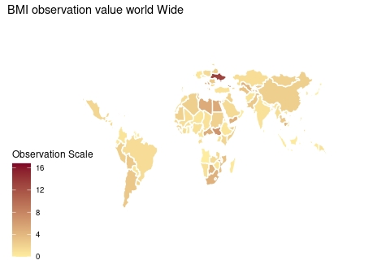
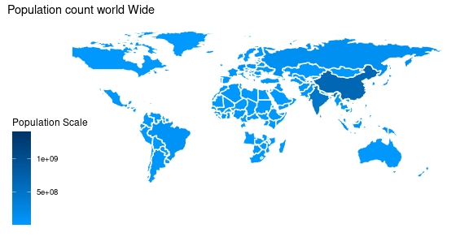
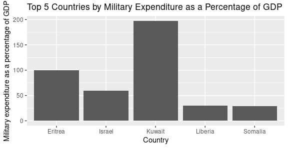
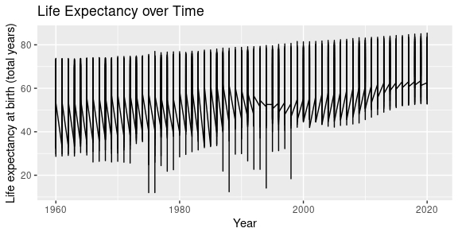
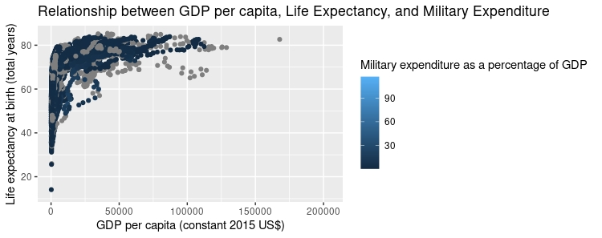

MT5000
Table of Contents
Introduction
World Map
Bar Plot
Time Series Chart
Scatter Plot
conclusion
Introduction
UNICEF is an organization that works on a global scale to protect and improve the lives of children all over the world. One of the ways in which UNICEF determines the state of children’s health is by calculating their body mass index (BMI). The body mass index (BMI) is a measurement that is frequently used to determine whether or not a person is underweight, overweight, or at a healthy weight for their height.
The data on children’s body mass index (BMI) that UNICEF has collected from a variety of countries can be analyzed with a number of different statistical tools.It is clear that many countries are still facing problems of this nature, and Unichef is assisting these nations in conducting research and calculating the total BMI rate.
Data Importing and Transformation
Importing two datasets
unicef2 <-read.csv(“unicef_indicator_2.csv”)
unimeta <-read.csv(“unicef_metadata.csv”)
names(unicef2)
names(unimeta)
Transforming column name from unimeta dataset
names(unimeta)[names(unimeta) == “Population..total”] <- “Population”
names(unimeta)
World Map
A rundown of the BMI trends that have been observed all over the world It presents a map of the world with figures for each country’s population as well as the average BMI for that country. The various ranges of BMI and population, in addition to the numerous types of observation status that are applicable to each country. On the map are displayed the countries that have the highest number of Observation values. These countries include Egypt and Ukraine. China and India, on the other hand, have the world’s largest populations but a relatively low observation value. This is something that we can see. As a consequence of this, BMI is unaffected by population size.
install.packages(“ggplot2”) library(ggplot2) install.packages(“ggthemes”) library(ggthemes)
World Map for “unicef2” Dataset
world_map <- ggplot(unicef2, aes(fill = obs_value, map_id = country)) + geom_map(map = map_data(“world”), color = “white”) + expand_limits(x = map_data(“world”)\(long, y = map_data("world")\)lat) + scale_fill_gradient(low = “#FFEDA0”, high = “#800026”, na.value = “grey50”, name = “Observation Scale”) + labs(title = “BMI observation value world Wide”) + theme_map()
world_map

World Map for “unimeta” Dataset
world_map2 <- ggplot(unimeta, aes(fill = Population, map_id = country)) + geom_map(map = map_data(“world”), color = “white”) + expand_limits(x = map_data(“world”)\(long, y = map_data("world")\)lat) + scale_fill_gradient(low = “#0099ff”, high = “#003366”, na.value = “grey50”, name = “Population Scale”) + labs(title = “Population count world Wide”) + theme_map()
world_map2

Bar Plot
According to the data presented in this bar chart, there are many countries in which the government allocates a greater portion of its budget to the military as well as to other departments; as a result, the country has a low BMI measurement. Some countries with Highest number of military expenditures are
- Kuwait
- Eritrea
- Israel
- Liberia
install.packages(“ggplot2”) library(ggplot2) library(ggplot2)
library(magrittr) install.packages(“dplyr”) library(dplyr)
top_10 <- head(unimeta[order(-unimeta$Military.expenditure….of.GDP.), ], 10)
Creating a bar chart for the top 10 countries using ggplot2
ggplot(top_10, aes(x = country, y = Military.expenditure….of.GDP.)) + geom_bar(stat = “identity”) + xlab(“Country”) + ylab(“Military expenditure as a percentage of GDP”) + ggtitle(“Top 5 Countries by Military Expenditure as a Percentage of GDP”)

Time Series Chart
The line chart demonstrates that both the total population and life expectancy have been on a downward trend since 2018. However, the year 2000 was the year that both population and inflation reached their all-time highs as a result of numerous general advancements in the health industry and widespread awareness by WHO.
Creating a time series plot of life expectancy over time
ggplot(unimeta, aes(x = year, y = Life.expectancy.at.birth..total..years.)) + geom_line() + xlab(“Year”) + ylab(“Life expectancy at birth (total years)”) + ggtitle(“Life Expectancy over Time”)

Scatter Plot
A scatter plot that depicts the relationship between GDP per capita and life expectancy can be an effective tool for communicating that increases in GDP are linked to improvements in access to healthcare, education, and other resources that can help people live longer and healthier lives. Wealthier countries typically have better sanitation and living conditions, which is another factor that can contribute to better overall health outcomes. We can see that if a country’s GDP is high, so is the life expectancy rate (Positive relationship).
Relationship between GDP per capita, Life Expectancy, and Military Expenditure using scatterplot
ggplot(unimeta, aes(x = GDP.per.capita..constant.2015.US.., y = Life.expectancy.at.birth..total..years., color = Military.expenditure….of.GDP.)) + geom_point() + xlab(“GDP per capita (constant 2015 US$)”) + ylab(“Life expectancy at birth (total years)”) + ggtitle(“Relationship between GDP per capita, Life Expectancy, and Military Expenditure”) + scale_color_continuous(name = “Military expenditure as a percentage of GDP”)

Conclusion
A person with a low BMI, also known as being underweight, has a body weight that is significantly lower than the recommended healthy weight for their height and age. This can result in serious health issues like weakened immune systems, delayed growth and development, and an increased risk of infections and diseases.
UNICEF has been working to address the issue of low BMI by funding nutrition and health programs in countries with high malnutrition rates. Many countries are affected by low BMI rates despite having a healthy economy.